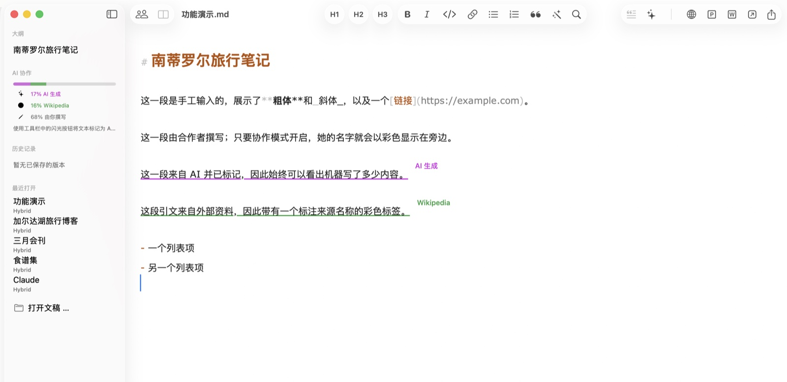
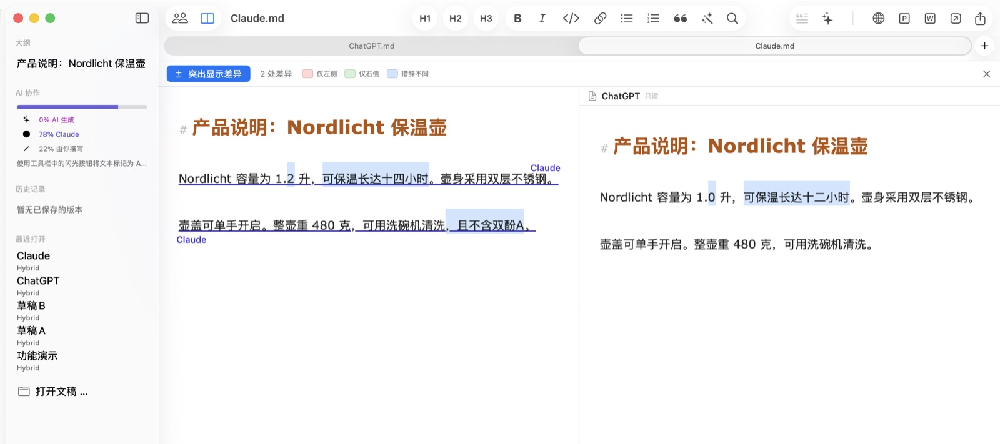
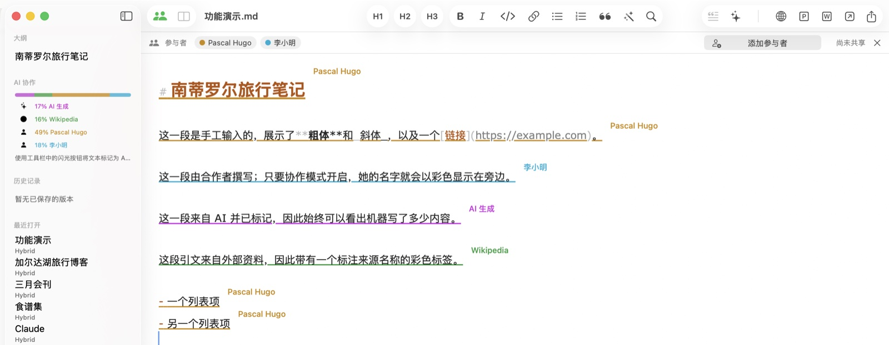
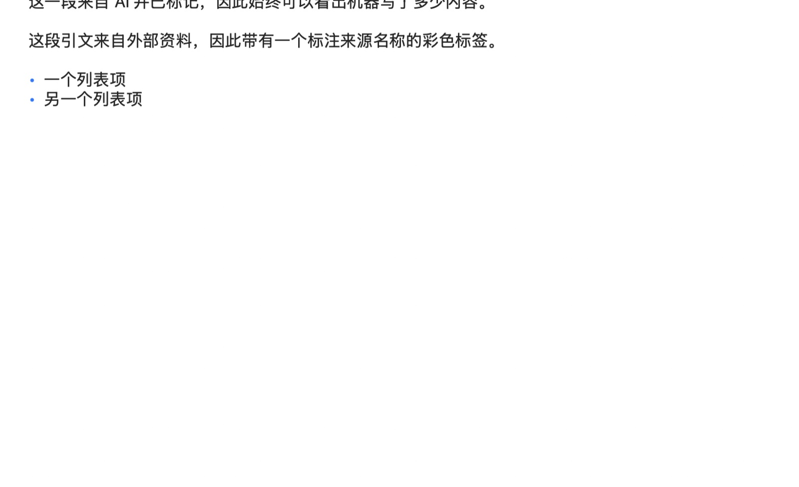

一键在线发布
将文档复制为带嵌入图片的排版HTML——可直接粘贴到WordPress等CMS。图片准确出现在应在的位置，不会变成失效链接。
Hybrid for macOS
Hybrid记录每段文字的来源：你亲自撰写、AI生成、引自署名来源，还是同事贡献。为发布内容的人而生——公关、市场营销、代理机构和编辑部。
即将推出 Hybrid即将登陆iPhone和iPad。

每段文字都携带自己的来源——在保存、共享和协作编辑中始终保留。这份记录藏在一个普通的.md文件里，任何其他编辑器都能打开；标签浮在文字上方，绝不会出现在任何导出中。
这一段是你自己输入的——你写下的一切自动算作你的。
这一段来自AI并已标记，机器在文本中的占比始终可见。AI生成
这条引文来自外部来源，来源名称以小标签形式标注。维基百科
核心承诺：某人贡献的内容永远归属于此人——即使日后访问权限被撤销。溯源记录的是谁写过，而不是谁现在有权限。
同一个问题发给两个AI工具，回答乍看一样。Hybrid精确高亮它们的差异并计数。给每个回答标上工具名称作为来源，即使合并之后，你仍然知道哪句话来自哪个工具。

通过链接、通讯录、邮件或信息邀请参与者——文档本身始终只存放在你的iCloud中。受邀者可实时共同写作：每段文字都带有作者的姓名和颜色，有人输入时，其名字会伴随跳动的圆点显示。受邀者无法导出文档，也无法将其保存为自己的文件——文档属于所有者。

标题、列表、真正的表格和嵌入图片，以读者将看到的样子呈现。预览实时跟随你的输入——可在独立窗口中，也可在编辑器旁的分屏视图中；发布到CMS之前检查文稿的理想方式。

将文档复制为带嵌入图片的排版HTML——可直接粘贴到WordPress等CMS。图片准确出现在应在的位置，不会变成失效链接。
一键将文本发送到ChatGPT、Claude、Perplexity或你选择的应用。标记AI段落，在侧边栏查看每位参与者的占比。
文档是任何编辑器都能打开的纯.md文件。Hybrid额外知道的一切——溯源、版本、作者——都藏在一条看不见的注释里随文件同行。
把照片拖进文本：自动缩放、转换并以Markdown引用插入。CSV或Excel文件则变成排版好的表格。
Hybrid在你写作时自动保存中间状态，每个状态都可查看和恢复。历史记录存于你的iCloud而非文件中——传出去的文档不含旧版本。
立即锁定应用，或在无操作后自动锁定。锁定就是锁定：所有窗口隐藏、导出停用——直到触控ID重新解锁。
凡是文字出自多人之手的地方——无论人还是机器——Hybrid都让来源一清二楚。
借助AI起草新闻稿，同时让每条引文可查证。当被问到哪些是人写的，你的文档自有答案——透明是工作方式，而不是事后补救。
多人执笔，一个声音。查看每个人的占比，并排比较草稿，把整洁的HTML交给任何CMS——整个内容工作流都在你的Mac上。
把自己的文字与来源和AI建议区分开。署名来源始终附着在每个段落上——历经修改、版本和协同编辑而不变。
与AI合写的报告需要可审计的记录。Hybrid记录每段文字出自谁——或什么——之手，触控ID锁定让机密草稿保持封闭。
并排比较模型输出，测量文档的AI占比，把提示词和结果保存为整洁的Markdown——任何工具都能读取。
从Markdown到CMS只需一键：排版HTML，图片准确嵌入应在的位置。另有PDF、Word和纯Markdown导出。
Hybrid即将推出iOS版。同样的文档，同样的溯源——装进口袋。在此之前，你的文件是iCloud Drive中的纯Markdown，任何设备都能读取。
Hybrid提供九种语言：简体中文、英语、德语、法语、西班牙语、意大利语、葡萄牙语、荷兰语和日语——本网站亦然。
Hybrid for Mac——为人、AI以及你发布的一切而生的Markdown编辑器。
macOS 13（Ventura）或更高版本 · Apple Silicon与Intel